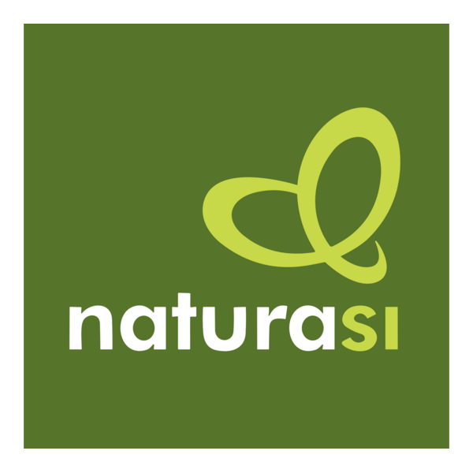
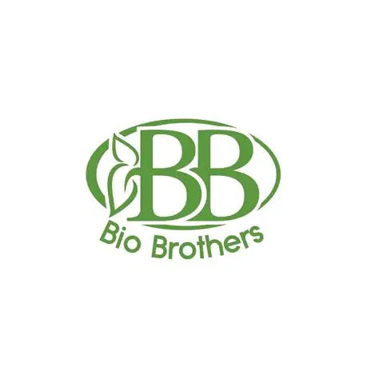
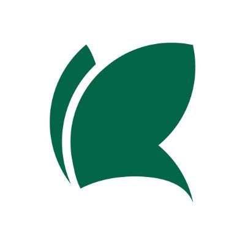
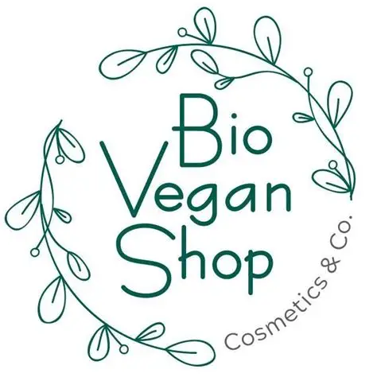
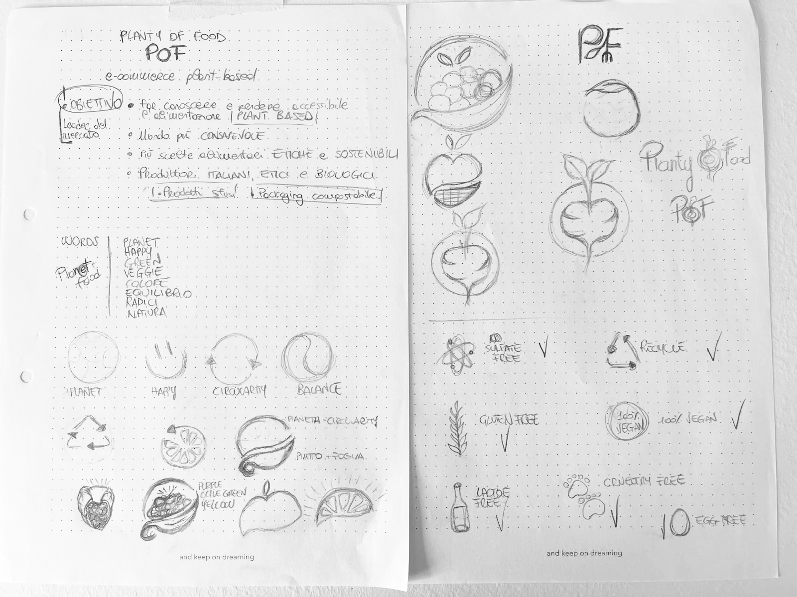
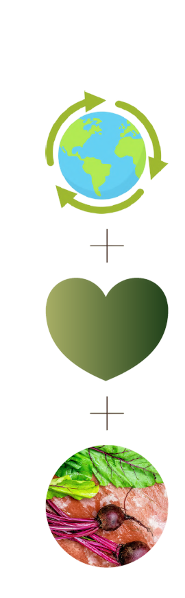
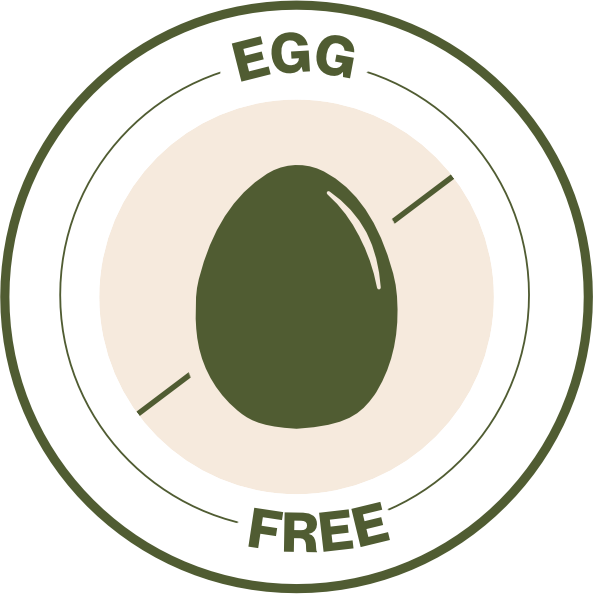
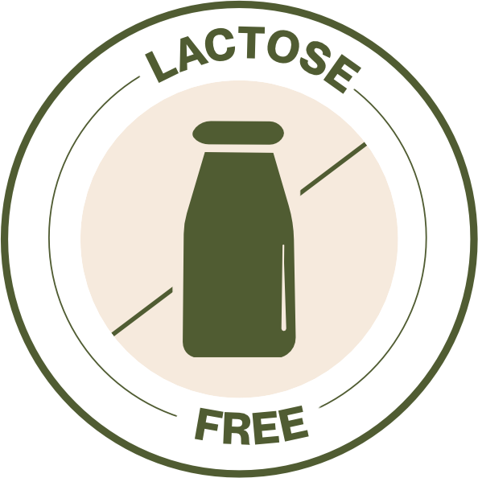
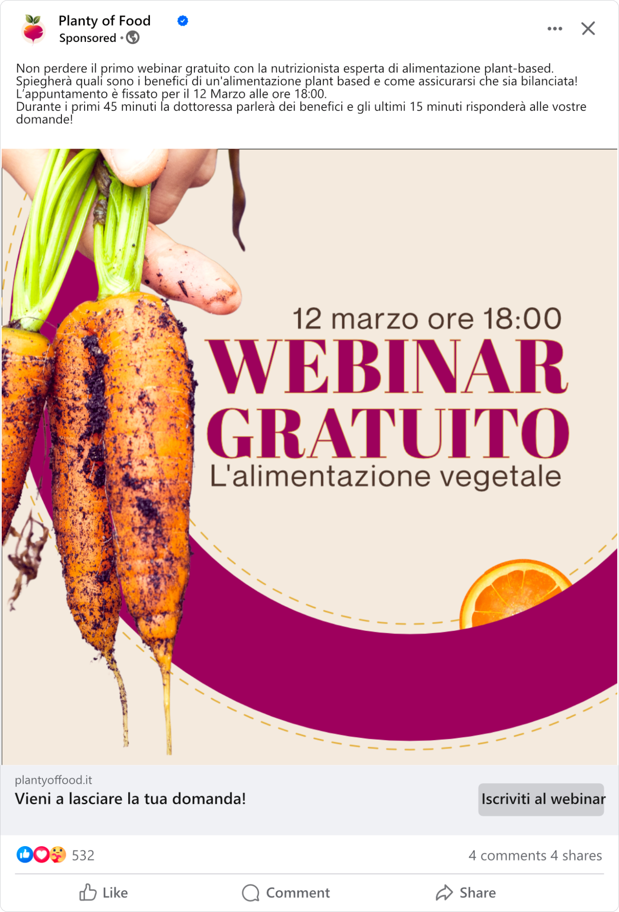
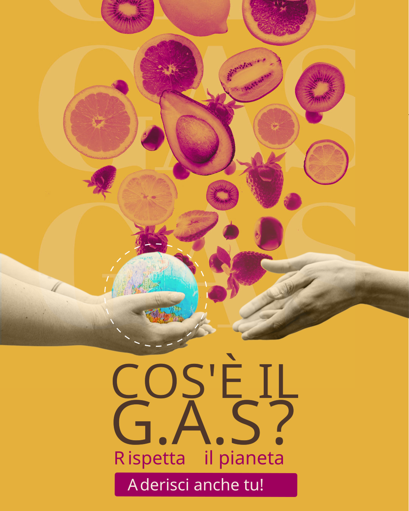

Abril Fatface · Regular
A B C D E F G H I J K L M N
O P Q R S T U V W X Y Z
a b c d e f g h i j k l m n
o p q r s t u v w x y z
1 2 3 4 5 6 7 8 9 0

Planty of Food is an Italian e-commerce focused on ethical, organic and sustainable food.
The brand promotes a plant-based lifestyle without presenting it as restrictive or monotonous, offering carefully selected products designed to reduce waste and environmental impact.
Eating plant-based does not automatically mean eating sustainably.
Planty of Food was created to bridge this gap by making ethical and low-impact food products easier to discover and purchase in everyday life.
The mission of Planty of Food is to encourage more conscious everyday choices.
The brand aims to make sustainability feel accessible, positive and compatible with real everyday habits.
The project focused on translating Planty of Food's values into a clear and recognizable digital identity.
The goal was to create a visual system that could communicate sustainability without relying exclusively on the typical visual language of green, minimal and “eco-looking” brands.
Before defining the visual direction, I explored how other brands in the sustainable and plant-based food market communicate their values and products.
I focused on their visual identity, website structure, communication style and overall positioning to understand established conventions and identify opportunities for differentiation.




The visual direction for Planty of Food was built around a simple idea: plant-based food should not feel dull, restrictive or predictable.
Instead of relying only on the typical green visual language associated with sustainability, the identity combines natural references with warmer, richer and more expressive colours. The aim was to communicate variety, positivity and a stronger emotional connection with food, while still preserving the brand’s ethical and sustainable values.
The overall aesthetic is bold, contemporary and approachable, using strong typography, vivid food imagery and recognizable graphic elements to create a more distinctive presence within the sustainable food market.
The Planty of Food logo was designed to move beyond a literal representation of the plant-based world and instead communicate the values behind the brand.



Its visual concept combines three main ideas:
Circular shapes reference environmental awareness and the idea of continuity, while the central heart-like form expresses care and conscious choices.
The beetroot becomes the main symbol of the identity, representing both the connection with the earth and the brand’s natural roots.



The color palette was designed to challenge the idea that sustainable and plant-based brands should rely almost exclusively on green.
Instead, Planty of Food combines natural, earthy tones with richer and more expressive colors to reflect the variety and vibrancy of plant-based food.
Dark Raspberry adds a bold and contemporary character, while Sunflower Gold introduces warmth and positivity. Muted Olive and Olive Leaf maintain the connection with nature, while Linen and Deep Mocha provide balance and a more grounded, organic feel.
The result is a palette that feels natural but not predictable, warm but still distinctive, reinforcing the idea that plant-based food can be colorful, enjoyable and full of personality.
HEX #E5B03B
RGB 229 176 59
CMYK 0 23 74 10
HEX #9E005D
RGB 158 0 93
CMYK 0 100 41 38
HEX #A7AE65
RGB 167 174 101
CMYK 4 0 42 32
HEX #525D37
RGB 82 93 55
CMYK 12 0 41 64
HEX #4F362B
RGB 79 54 43
CMYK 0 32 46 69
HEX #F4EADE
RGB 244 234 222
CMYK 0 4 9 4
Planty of Food combines an expressive serif with a soft, versatile sans serif to create a visual language that feels bold, warm and easy to read.
Abril Fatface is used mainly for titles and key messages: its thick curves and thin serifs echo the organic shapes of the logo and help the brand stand out with confidence.
Neue Montreal supports the system across subtitles, body copy and digital interfaces. Its clean structure and multiple weights make the hierarchy flexible, clear and consistent.
A B C D E F G H I J K L M N
O P Q R S T U V W X Y Z
a b c d e f g h i j k l m n
o p q r s t u v w x y z
1 2 3 4 5 6 7 8 9 0
A B C D E F G H I J K L M N
O P Q R S T U V W X Y Z
a b c d e f g h i j k l m n
o p q r s t u v w x y z
1 2 3 4 5 6 7 8 9 0
The icon system was designed to extend the visual identity of Planty of Food across product communication.
Each icon represents a specific product attribute or dietary feature, including 100% vegan, recyclable, cruelty-free, gluten-free, egg-free and lactose-free.
The icons follow the same visual language as the logo, using circular shapes, simplified forms and the brand’s dark green tone to maintain consistency and immediate recognition across different touchpoints.


The social media identity was designed to translate Planty of Food’s brand values into a bold, contemporary and recognizable visual language.
A warm and saturated color palette plays a central role in the system, with Sunflower Gold used as a recurring base to convey energy and positivity. Typography, colors and logo usage remain consistent across Facebook, YouTube and Instagram, helping strengthen brand recognition across different platforms.




Planty of Food shows how a brand identity can turn abstract values into a coherent visual system.
From the logo to the color palette, iconography and social media applications, every element was designed to support the same personality and create a recognizable experience across different touchpoints.
The project was not just about designing individual assets, but about building a system able to remain consistent while adapting to different formats, messages and contexts.